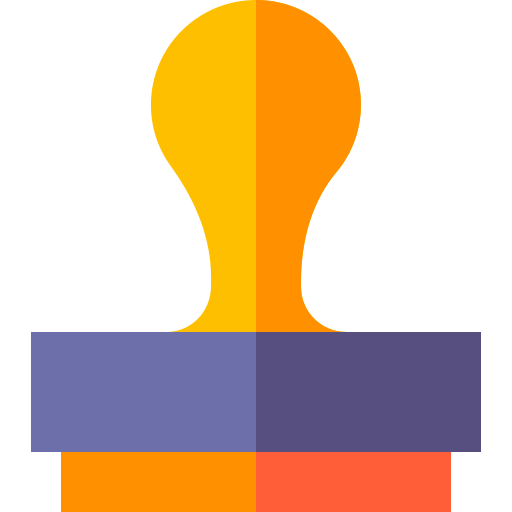
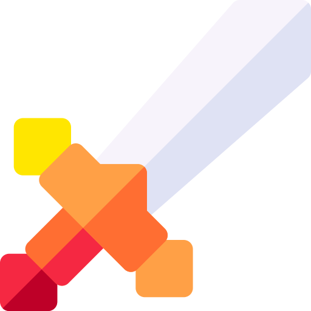

We have web
accessibility in mind
Our mission is to empower organizations to make their web
content accessible to people with disabilities

Accessibility Training
Wether here in Utah or on-site at your organization, WebAIM can provide web and document training to fit your needs.
Stamp icons created by Freepik - FlaticonTechnical Assistance
Need assistance implementing accessibility? WebAIM's expert staff can provide the assistance you need.
Audio icons created by Freepik - Flaticon

StrategicA11y
Need assistance implementing accessibility? WebAIM's expert staff can provide the assistance you need.
Sword icons created by Freepik - FlaticonEvaluation and Reporting
we can provide reports to help you know how accessible your site is and how to make it better.
Report icons created by Freepik - Flaticon